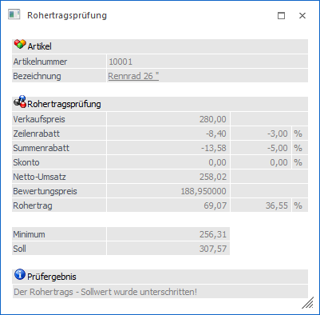
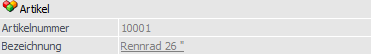
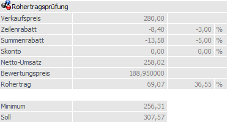
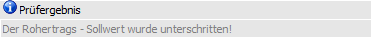

Das Fenster "Rohertragsprüfung" wird nur dann geöffnet, wenn die Rohertragskontrolle aktiviert wurde.
Was braucht man alles für die Rohertragsprüfung?
ü Einstellungen in den
Fakt-Parametern
In den Fakt-Parametern muss in der Rubrik "Rohertragsprüfung"
ein "Mindest"- und ein "Soll-Prozentsatz" eingetragen werden (nähere
Informationen hierzu entnehmen Sie bitte dem WinLine START-Handbuch).
ü Einstellungen in der
Artikelgruppe
Über die Artikelgruppe wird gesteuert, welche Aktion bei der
Rohertragsprüfung ausgelöst werden soll. Dabei sind die Optionen "keine
Prüfung", "Warnung" oder "Sperre" zulässig (nähere Informationen hierzu
entnehmen Sie bitte dem WinLine FAKT1-Handbuch, Kapitel "Artikelgruppen").
ü Einstellung im
Vertreterstamm
Im Vertreterstamm wird eingestellt, wie die Rohertragsprüfung
durchgeführt werden soll. Dabei gibt es die Optionen "keine", "individuell" (es
können Prüf-Prozente für diesen Vertreter eingetragen werden) oder "allgemeine"
(die Prozentsätze werden aus den Fakt-Parametern übernommen - nähere
Informationen hierzu entnehmen Sie bitte dem WinLine FAKT1-Handbuch, Kapitel
"Vertreterstamm").
ü Einstellung in den Optionen der
Belegerfassung
In dem Register "Optionen" der Belegerfassung kann eingestellt
werden, wie die Meldung zur Rohertragsprüfung ausgegeben werden soll. Dabei
stehen die Optionen "0 - Infofenster", "1 - Meldung", "2 - Meldung und
Infofenster" und "3 - Infofenster bei allen Artikeln" zur Verfügung (nähere
Informationen hierzu entnehmen Sie bitte dem WinLine FAKT2-Handbuch, Kapitel
"Belegerfassen - Register "Optionen"").
Abhängig vom eingegebenen Artikel, vom Verkaufspreis und vom Vertreter im Beleg wird berechnet, ob der Rohertrag den Mindest- bzw. den Sollprozentsatz erreicht. Ist dies nicht der Fall oder ist der Meldungstyp "3 - Infofenster bei allen Artikel" eingestellt, dann wird ein Fenster geöffnet, in welchem folgende Informationen ersichtlich sind:

Artikel

Ø Artikelnummer
An dieser Stelle wird die Artikelnummer angezeigt.
Ø Bezeichnung
Hier wird die Bezeichnung des Artikels dargestellt. Dabei wird nicht die Bezeichnung aus dem Artikelstamm, sondern aus dem Beleg genommen.
Rohertragsprüfung

Ø Verkaufspreis
Hier wird der in der Artikelerfassung eingegebene Verkaufspreis angezeigt.
Ø Zeilenrabatt / Summenrabatt / Skonto
Diese Zeilen werden nur dann mit Werten gefüllt und entsprechend mit gerechnet, wenn die entsprechenden Optionen ("abzügl. Rabatte" bzw. "abzügl. Skonto") in den FAKT-Parametern (Vertreter - Vertreterabrechnung) aktiviert wurden.
Ø Netto-Umsatz
An dieser Stelle wird der errechnete Netto-Umsatz des Artikels dargestellt (Verkaufspreis abzüglich Zeilenrabatt, Summenrabatt und Skonto).
Ø Bewertungspreis
Hier wird der aktuelle Bewertungspreis des Artikels angezeigt.
Hinweis
Die Grundlage des Bewertungspreises kann im Artikelstamm (WinLine FAKT - Stammdaten - Artikelstamm - Artikel) des Artikels (Register "Lager" - Unterregister "Einstellungen" - Option "Basis für Rohertrag") definiert werden.
Ø Rohertrag
Hier werden der aktuelle Rohertrag und der Rohertragsprozentsatz ausgewiesen.
Ø Minimum
An dieser Stelle wird der Verkaufspreis angezeigt, der mindestens erreicht werden muss.
Ø Soll
An dieser Stelle wird der Verkaufspreis angezeigt, der erreicht werden soll.
Prüfergebnis

Ø Hinweismeldung
Hier wird in Form eines Texthinweises auf das aktuelle Prüfungsergebnis hingewiesen (z.B. "Der Rohertrags - Sollwert wurde unterschritten").
Button
Ø Ende
Durch Drücken des Buttons "Ende" bzw. der ESC-Taste wird das Fenster geschlossen.
Achtung
Wird der Verkaufspreis im Falle einer Sperre lt. Artikelgruppe nicht zumindest auf den Mindestpreis geändert, so erscheint beim Verlassen der Zeile das Fenster der Rohertragsprüfung immer wieder.